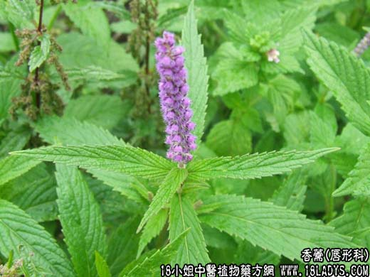

【中药概述】
香薷为唇形科草本植物海州香薷或石香薷的全草。辛，微温。归肺、胃经。
1．发汗解表：用于暑湿感冒，风寒袭表，湿滞于里，恶寒发热，头重头痛，胸闷吐泻等证，如（<和剂局方>香薷饮）、（四味香薷饮）。
2．呕吐腹泻：用于暑季恣食生冷、湿阻脾胃所引起的呕吐、泄泻等，可配扁豆，厚朴等。
3．利尿：用于水肿，小便不利。可单用，也可配伍健脾利水的白术同用，如（深师薷术丸）、（<深师方>薷术丸：香薷，白术）。
【药效鉴别】
香薷外能发汗散寒而解表，内能化湿以和中，故作为治疗夏月乘凉饮冷，阳气不得发越所致的“阴暑”的专药。“夏月之用香薷，犹冬月之用麻黄”。
【药理作用】
香薷挥发油有发汗解热作用，并可刺激消化腺分泌及胃肠蠕动。香薷油有预防流感作用，可使发病率比未用者低。
【化学成分】
含挥发油，其成分为香薷酮、倍半萜烯等。
【用量用法】
6——10g，大剂量可用至30g，水煎服。
【使用注意】
表虚汗多者忌。